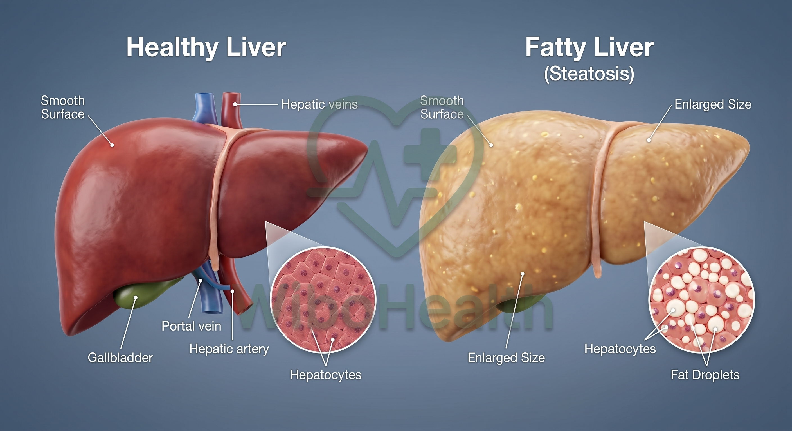
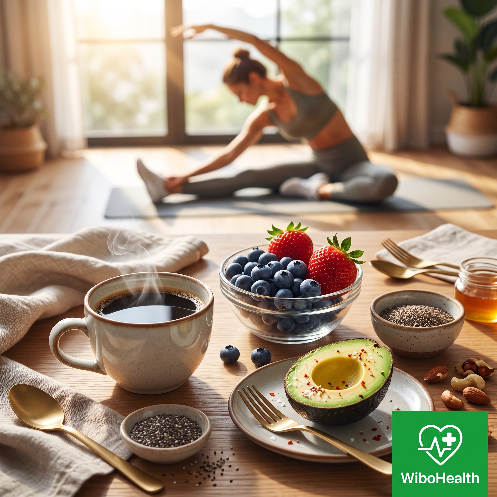

يُعد الكبد أكبر معمل كيميائي حيوي في جسم الإنسان، حيث يقوم بأكثر من 500 وظيفة حيوية تشمل تنقية السموم، وتصنيع البروتينات، وإدارة الطاقة. ومع ذلك، فإن واحداً من كل أربعة أشخاص حول العالم يعاني اليوم من تراكم غير طبيعي للدهون داخل خلايا الكبد دون أن يشرب قطرة كحول واحدة، وهي الحالة التي تُعرف سريرياً بـ الكبد الدهني غير الكحولي (NAFLD)، أو التسمية الدولية الحديثة الأدق: مرض الكبد الدهني المرتبط بالخلل الأيضي (MASLD).
الخطورة الحقيقية لهذا المرض تكمن في صمته المطبق؛ فالكبد لا يملك مستشعرات للألم بداخله، مما يجعله يتشحم تدريجياً لسنوات دون أدنى شكوى. وعندما تبدأ إنزيمات الكبد في الارتفاع، نكون غالباً أمام التهاب دهني كبدي متقدم يهدد بالتليف. في هذا الدليل السريري المفصل، سنفكك اللغز البيوكيميائي للكبد الدهني، ونوضح كيف يقود سكر الفركتوز ومقاومة الإنسولين هذه الكارثة، مع وضع خطة طبية مثبتة بالدليل لعكس الحالة واستعادة كبد نقي وصحي.
حقيقة سريرية صادمة:
أكثر من 70% من المصابين بالكبد الدهني يملكون إنزيمات كبد (ALT و AST) ضمن النطاق "المختبري الطبيعي" في المراحل الأولى! هذا يعني أن فحص الإنزيمات وحده لا يكفي لنفي وجود دهون الكبد، بل يتطلب الأمر فحصاً بالموجات فوق الصوتية (Ultrasound) وتقييم مؤشر HOMA-IR لمقاومة الإنسولين.
الفركتوز: الفخ البيوكيميائي الذي يصنع دهون الكبد
تتعامل خلايا جسمك كافة (العضلات، الدماغ، القلب) مع سكر الجلوكوز وتحرقه بسهولة لتوليد الطاقة. ولكن سكر الفركتوز (الموجود بكثافة في شراب الذرة عالي الفركتوز، والمشروبات الغازية، والعصائر الصناعية) له مسار استقلابي مغاير تماماً: الكبد هو العضو الوحيد الحصري القادر على استقلابه.
عندما تستهلك كميات كبيرة من الفركتوز السائل، فإنه يتجاوز نظام المراقبة الإنزيمية الدقيق في الكبد (إنزيم الفوسفوفركتوكاينيز)، فيغرق الميتوكوندريا الكبدية بطوفان من الركائز السكرية. وكنتيجة حتمية، لا يجد الكبد مفراً سوى تحويل هذا الفائض مباشرة إلى دهون ثلاثية سامة في عملية تُعرف بـ (De Novo Lipogenesis - DNL) أو تصنيع الدهون الجديدة من الصفر!
مقاومة الإنسولين وحلقة الهلاك الدهنية
تراكم قطيرات الدهون الثلاثية داخل الخلايا الكبدية يعطل مسارات استقبال الإنسولين، فتصبح خلايا الكبد "مقاومة للإنسولين". في الحالة الطبيعية، يُصدر الإنسولين أمراً للكبد بالتوقف عن إنتاج الجلوكوز بعد الأكل. أما في الكبد الدهني، يفقد الكبد القدرة على سماع هذا الأمر، فيستمر في ضخ السكر بالدم حتى وأنت صائم!
يدخل الجسم حينها في حلقة مفرغة مدمرة: ارتفاع السكر يجبر البنكرياس على ضخ مزيد من الإنسولين، والإنسولين العالي يُنشط جينات تصنيع الدهون بالكبد، مما يراكم دهوناً إضافية ويعمق المقاومة أكثر فأكثر.
المراحل السريرية لتطور الكبد الدهني
تراكم قطرات الدهون بنسبة تفوق 5% من وزن الكبد، دون وجود التهاب أو أضرار نسيجية.
الدهون تؤكسد الخلايا وتحدث استجابة مناعية والتهاب وتضخم بالخلايا (Ballooning).
استبدال النسيج الوظيفي بندبات ليفية صلبة تعيق تدفق الدم ووظائف الكبد الحيوية.

رسم سريري توضيحي: مقارنة بين الكبد السليم وتشحم الكبد وتراكم الدهون الثلاثيةالعلامات السريرية التي يجب ألا تتجاهلها
رغم أن المرض صامت، إلا أن الجسد يرسل إشارات استغاثة غير مباشرة:
- الإرهاق المزمن وثقل الذاكرة: نتيجة عجز الكبد عن معالجة فضلات الأيض بكفاءة وتراكم السموم المجهرية.
- عدم ارتياح أو ثقل في المراق الأيمن: إحساس بالامتلاء تحت القفص الصدري الأيمن ناجم عن تضخم محفظة الكبد (Glisson's capsule).
- بروز البطن الحشوي (Visceral Fat): تراكم الدهون في محيط الخصر هو المرآة الخارجية المباشرة لدهون الكبد والأحشاء.
- ارتفاع الدهون الثلاثية وانخفاض الـ HDL: في فحص الدهون الروتيني، تعكس الدهون الثلاثية المرتفعة سرعة وتيرة تصنيع الدهون في الكبد.
البروتوكول السريري المتكامل لعكس وتطهير الكبد الدهني
الخبر الطبي الرائع هو أن الكبد هو العضو الأكثر قدرة على التجدد الذاتي والتعافي السريع في الجسم البشري! بمجرد إزالة العبء الأيضي عنه، يبدأ في حرق الدهون المتراكمة خلال أسابيع قليلة:
1. الوقف الصارم للفركتوز المصنّع والسكر السائل
الخطوة الأولى غير القابلة للتفاوض هي التوقف التام عن المشروبات الغازية، العصائر (حتى الطبيعية المعلبة الخالية من الألياف)، والحلويات التجارية ومخبوزات الطحين الأبيض. إن قطع الفركتوز يخفض وتيرة تصنيع الدهون الجديدة (DNL) في الكبد بنسبة تتجاوز 40% خلال 10 أيام فقط!
2. استراتيجية الصيام المتقطع والالتهام الذاتي (Autophagy)
عند الصيام لمدة 14-16 ساعة، تنخفض مستويات الإنسولين القاعية في الدم، مما يجبر الكبد على التوقف عن تخزين الدهون وتفعيل مسار أكسدة الأحماض الدهنية وحرق مخازن الغليكوجين والدهون الحشوية. كما ينشط الصيام عملية "الالتهام الذاتي الكبدي"، حيث تتخلص خلايا الكبد من البروتينات التالفة وتصلح الميتوكوندريا المجهدة.
3. القوة العلاجية للقهوة ومضادات الأكسدة
تؤكد التوصيات السريرية للجمعية الأوروبية لدراسة الكبد (EASL) أن تناول 2 إلى 3 فناجين من القهوة غير المحلاة يومياً يرتبط بانخفاض حاد في مخاطر تطور الكبد الدهني إلى تليف، بفضل مركب الكافيين وحمض الكلوروجينيك الذي يحفز إفراز الجلوتاثيون ويقلل الإجهاد التأكسدي.

القهوة غير المحلاة والتوتيات ومضادات الأكسدة: ركائز سريرية مثبتة لتنشيط الميتوكوندريا وحرق دهون الكبد4. الكولين والدهون الصحية المنشطة للمرارة
الكولين (المتوفر بكثرة في صفار البيض العضوي، والكبد الحيواني، والأسماك) هو حجر الأساس في تكوين بروتين VLDL الذي يقوم بوظيفة "شاحنة النقل" التي تُخرج الدهون الثلاثية من الكبد إلى باقي أنسجة الجسم. نقصه يؤدي إلى احتباس قسري للدهون داخل الكبد.
أسئلة شائعة يجيب عنها فريق ويبو هيلث الطبي
لا، الفاكهة الكاملة تحتوي على ألياف تبطئ امتصاص الفركتوز في الأمعاء وتمنع وصوله المفاجئ للكبد. ومع ذلك، يُفضل التركيز على الفواكه منخفضة السكر كالتوتيات، الفراولة، والتفاح الأخضر، وتجنب عصرها تماماً.
في المراحل الأولى من التشحم، أظهرت الدراسات السريرية أن خسارة 5% إلى 10% من وزن الجسم كافية لتقليل دهون الكبد بنسبة تتجاوز 60% وتطبيع إنزيمات الكبد في غضون شهرين إلى ثلاثة أشهر من الالتزام بالبروتوكول.
المعلومات الواردة في هذا الدليل مقدمة للتثقيف الصحي والتوجيه الغذائي فقط، ولا تغني عن الاستشارة السريرية المباشرة أو الفحوصات التشخيصية التي يحددها طبيبك المعالج بناءً على حالتك الفردية.